博多
福岡県
九州玄関口。博多駅、屋台、豚骨拉麺、明太子。太宰府天満宮、糸島海岸線。
行先 / 九州
火山与温泉，海与街道。日本西南漂浮之七県島。
概要
九州，日本列島西南第三主島。北自福岡、南至鹿児島，火山、温泉、海岸線、古道密布。 阿蘇山巨大火口、桜島噴煙、別府与由布院之湯気、 長崎之出島与教堂、博多屋台与豚骨拉麺。 東京京都節奏之外，地域風土与郷土食依然濃厚。
本州新幹線直達；福岡空港地下鉄五分至博多駅。海外入国与島内移動皆便。
県別案内
九州玄関口。博多駅、屋台、豚骨拉麺、明太子。太宰府天満宮、糸島海岸線。
有田焼、伊万里焼之窯元。吉野ヶ里遺跡、嬉野温泉、唐津宮日。
出島与GLOVER園、原爆資料館、長崎什錦麺、長崎蜂蜜蛋糕、五島列島、軍艦島。
熊本城、阿蘇山火口、黒川温泉、馬刺、天草之海。
別府八湯与地獄巡、由布院、九重連山、関鯵・関鯖。
高千穂峡、青島神社、日南海岸、鶏南蛮、地鶏炭火焼。
桜島、指宿砂蒸温泉、知覧武家屋敷、屋久島、奄美群島、芋焼酎。
観光行政常与九州並列。珊瑚礁、琉球料理、首里城、八重山諸島。
旅程組立
福岡為起点、経大分・熊本、再帰福岡。八日七泊。自上而下、毎段加深停留、再向下一地落下。
往復皆於福岡完結、JR 九州 全線 5 日券＋「由布院之森」「阿蘇号」指定席券為現実選択。
路線図
九州島内主要鉄道網、及観光向 D&S 列車（設計与故事）運行区間。本旅三本以粗線標示。
博多 ↔ 由布院 ↔ 別府
緑色車体、木紋内装、沙龍車。九州代表観光特急。本旅往路使用。
熊本 ↔ 阿蘇 ↔ 別府
展望「全景座席」与子供遊戯区。眺阿蘇外輪山。本旅中継使用。
博多 ↔ 熊本 ↔ 鹿児島中央
島内南北幹線。博多至熊本約四十分、博多至鹿児島中央約一時間二十分。最終日使用。
鹿児島中央 ↔ 指宿
黒白二色車体、開門時噴霧之演出。本旅未取、為鹿児島延伸選択。
佐世保 ↔ 長崎（季節運行）
金色車体、甜点列車。需事前予約。
熊本 ↔ 人吉
球磨川沿二両編成。豪雨災害後復旧運行注意。
宿泊図
七泊集約於四拠点。減少解装次数、時間更多用於温泉与食。
時系列地図
八日動向、地図上以番号拠点標示、下方時間軸並列、同時可見。
行先・撮影
日毎・撮影予定地点。各日代表景観、上自下、時系列並列。
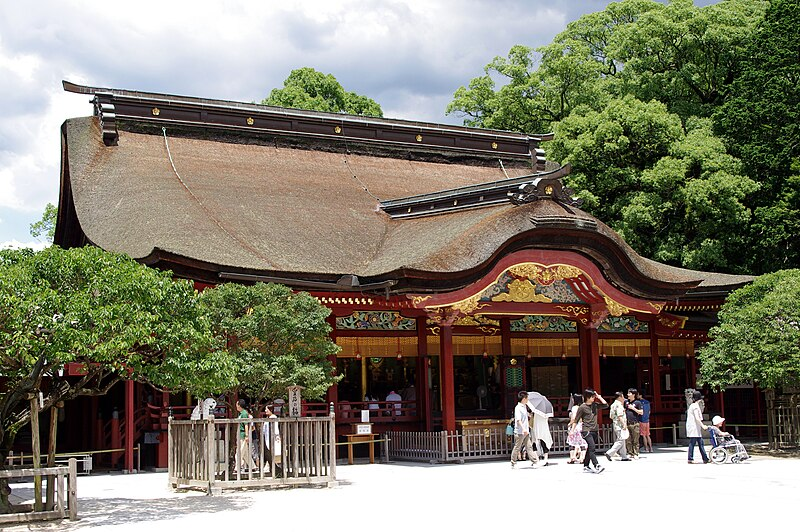
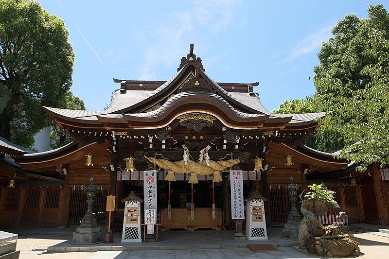
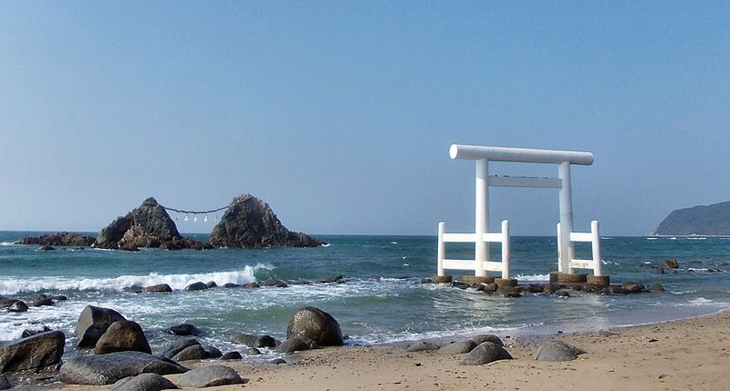
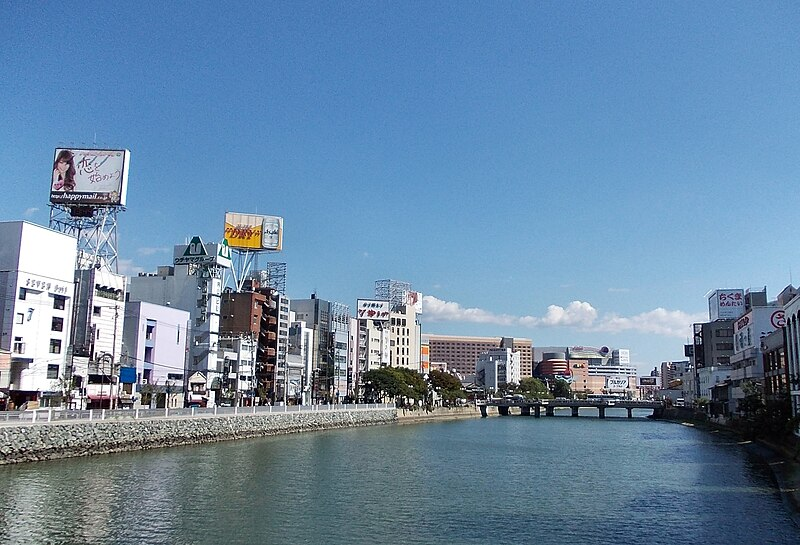
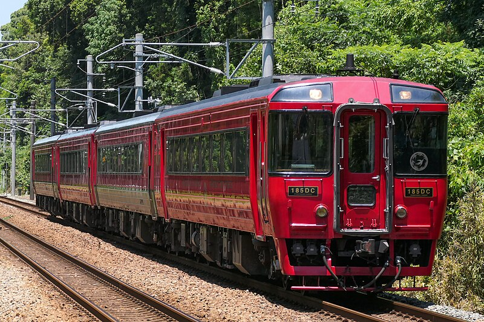
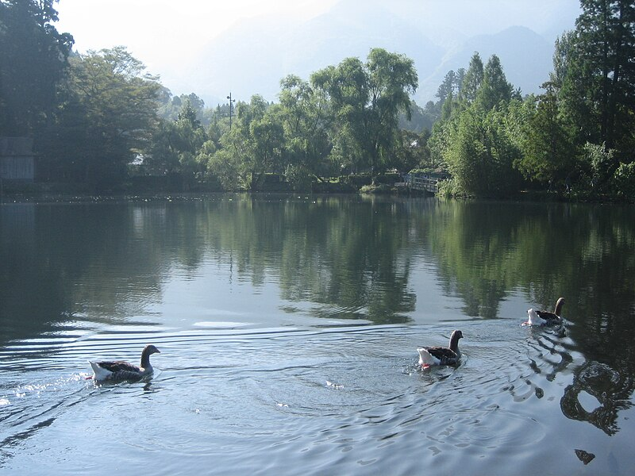
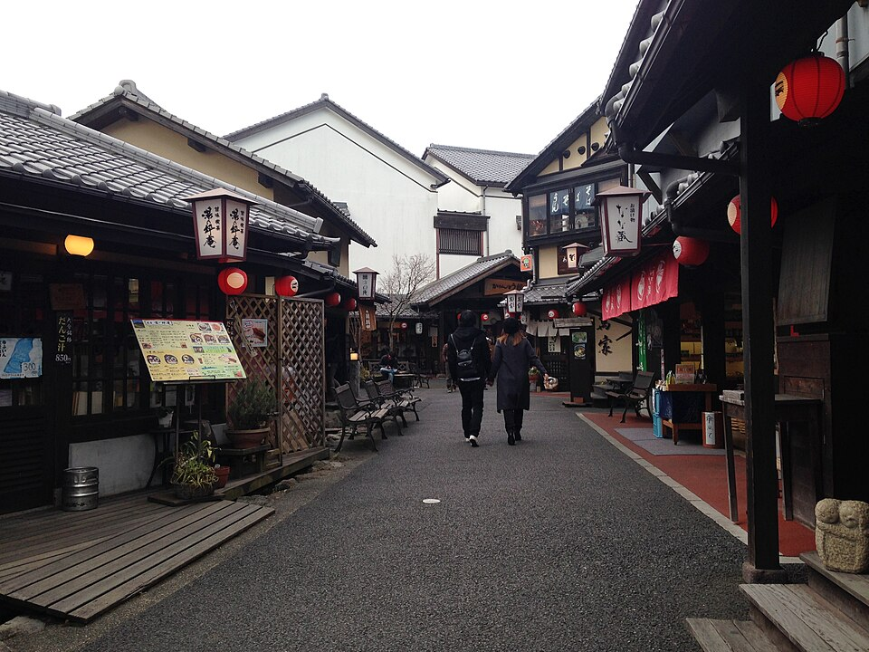
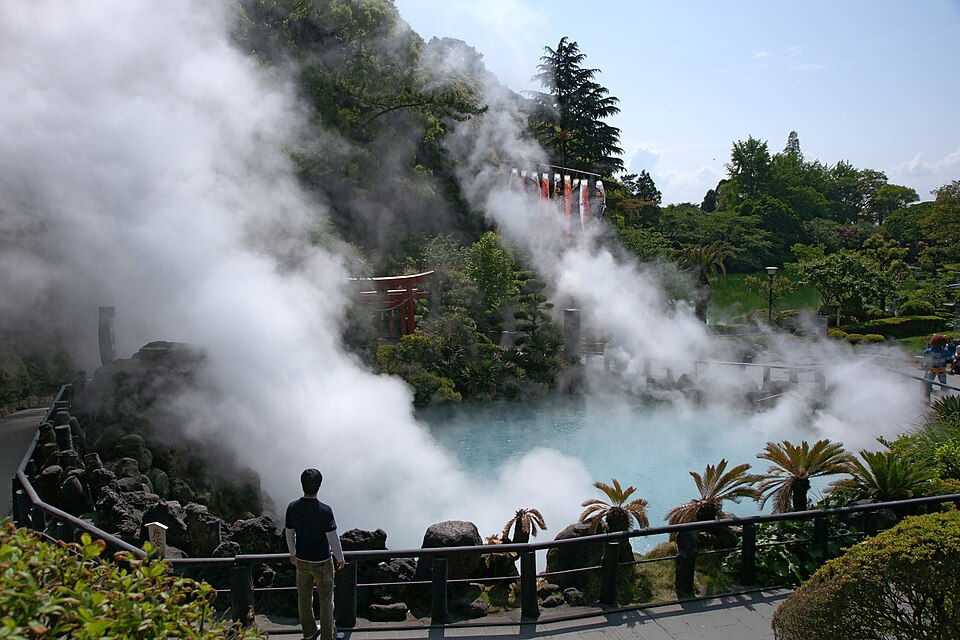
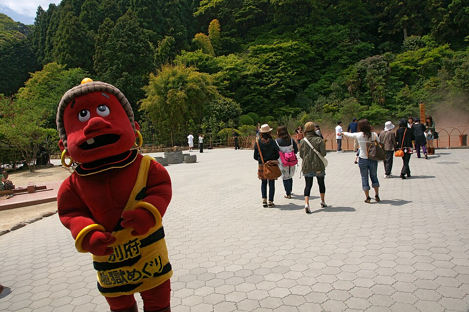
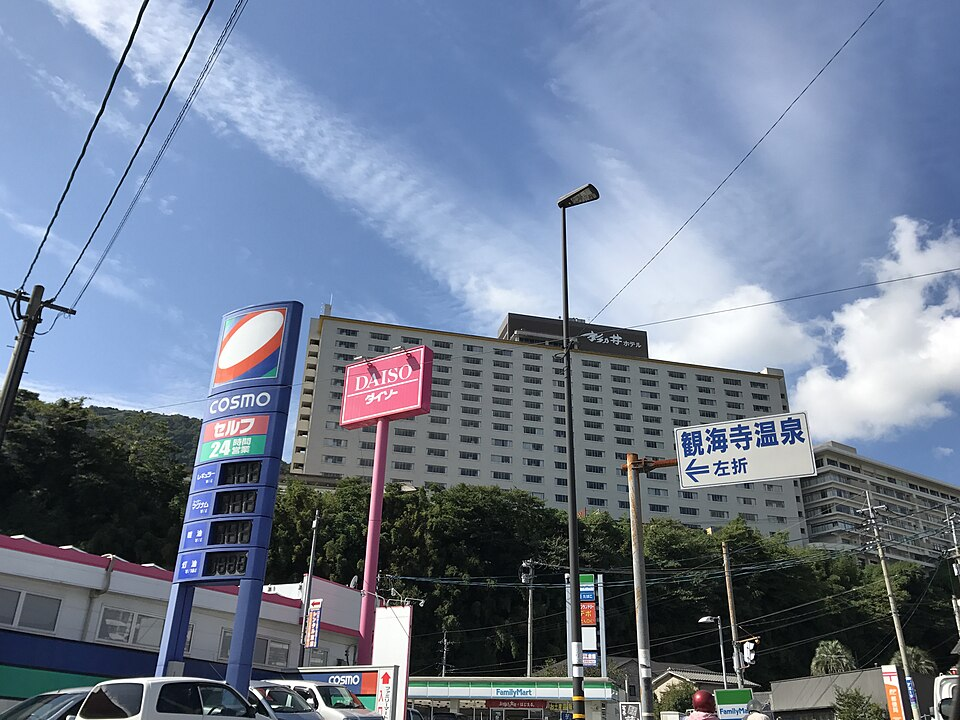
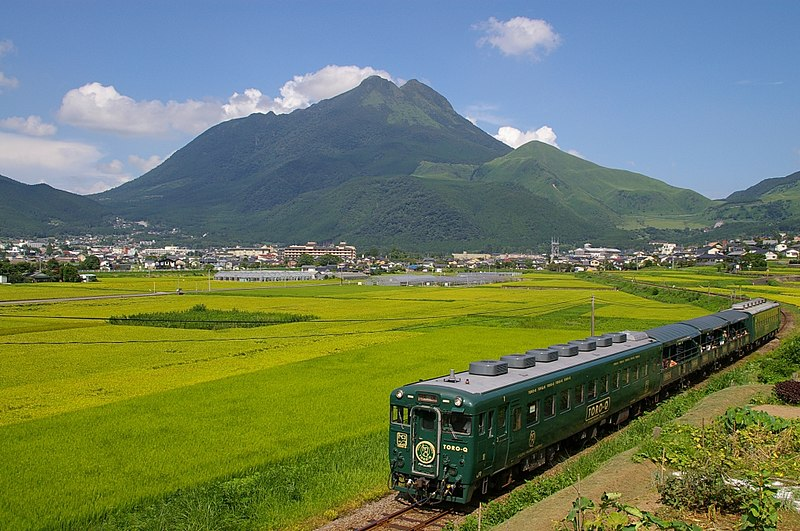
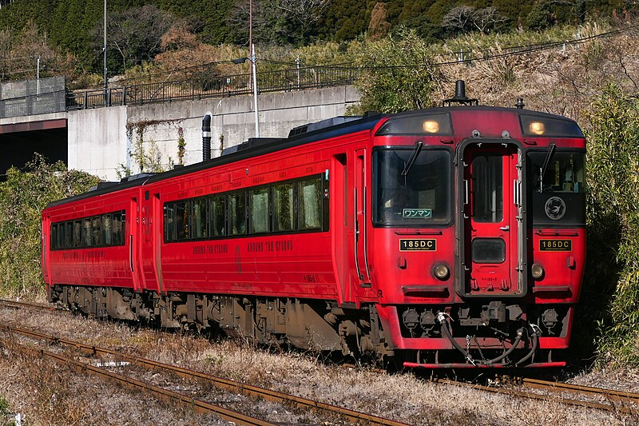
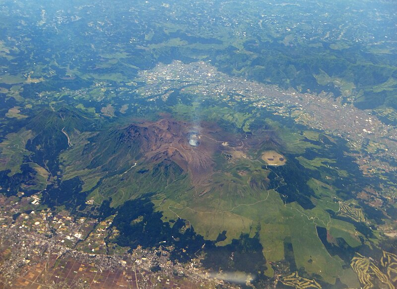
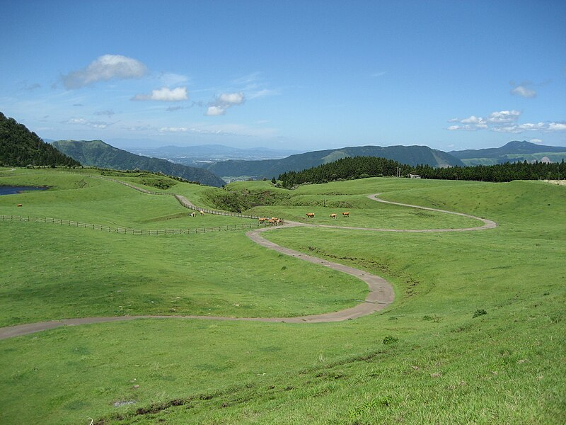
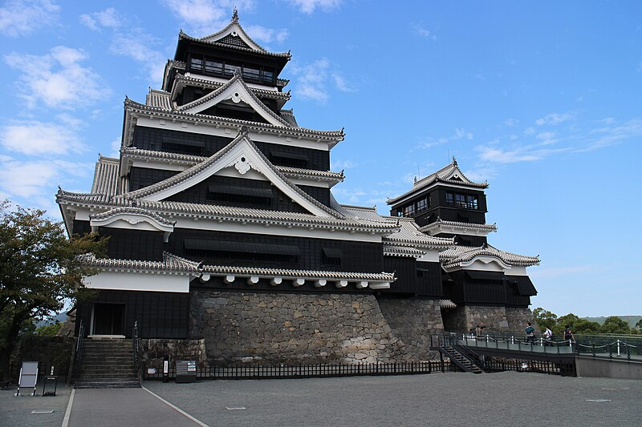
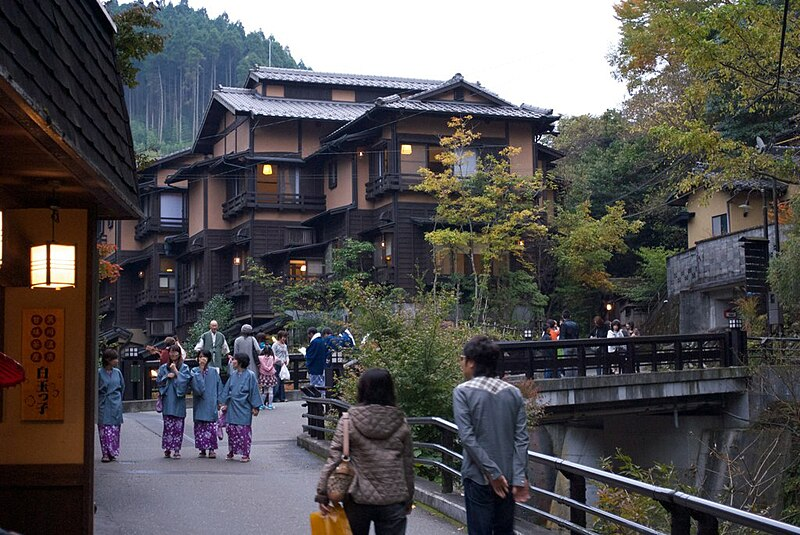
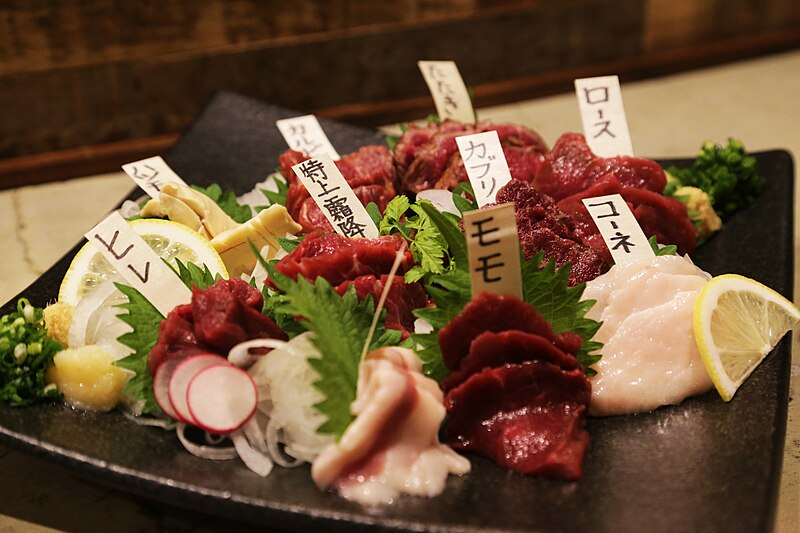
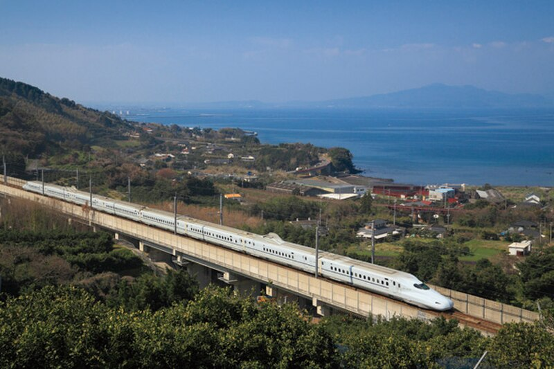
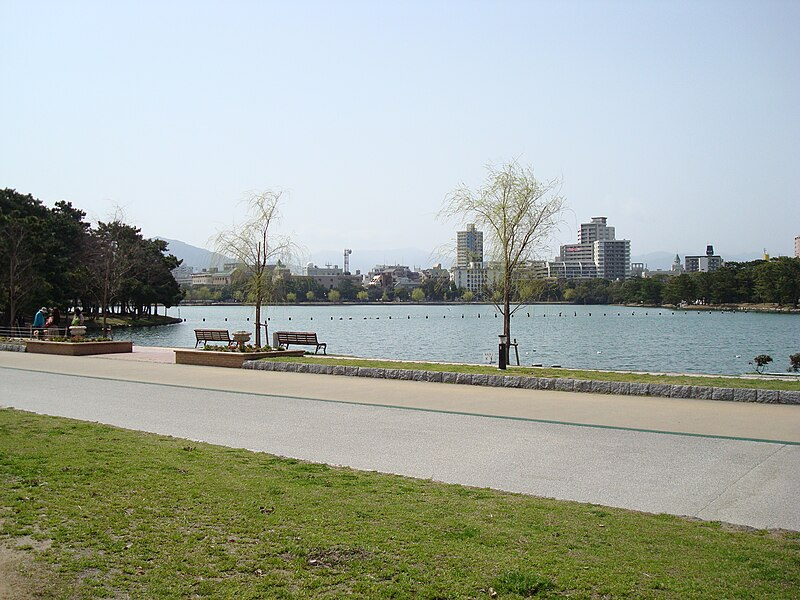
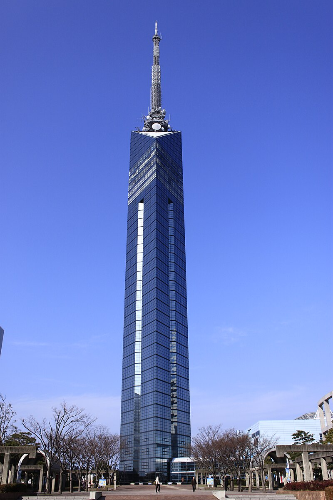
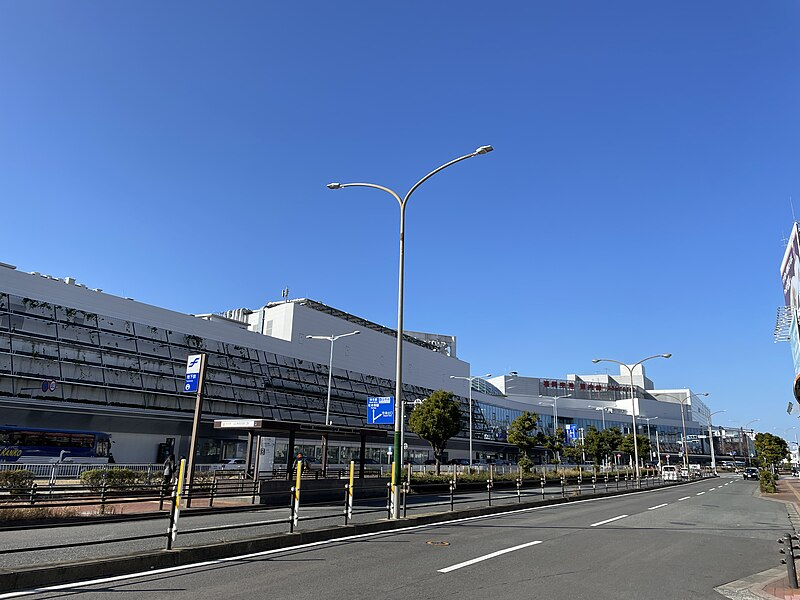
予算
六名・三室双人想定。宿泊：別府為温泉旅館（杉乃井）、他為中級酒店。為替・季節・人数構成、前後変動。
想定：1 GBP ≒ ¥190、1 USD ≒ ¥150。為替・季節・予約時期影響 ±20%。温泉旅館二食付者割安之場合多。
見所
世界最大級之火口、草千里、中岳火口。
鹿児島湾活火山。市内日見噴煙。
柱状節理之峡、扁舟与真名井之滝。
八泉源、地獄巡、海地獄・血池地獄。
由布岳与金鱗湖、湯坪街道散策。
渓流沿宿、九州第一湯治場。
加藤清正名城、震災後復旧。
鎖国時代之唯一西方窓口、復元区。
世界自然遺産、縄文杉与苔林。
長崎沖廃墟群、登島観光。
磁器発祥地、窯元与陶器市。
福岡車程一時間、海与咖啡。
郷土料理
博多発祥。細麺、白濁湯、替麺文化。
長崎中華系麺、太麺与豚骨海鮮湯。
福岡冬季定番、牛雑・韭菜・甘藍・辣椒。
熊本郷土料理、生姜与甜醤油。
宮崎発明、炸鶏、甜醋与塔塔醤。
宮崎地鶏、炭煙与粗塩。
鹿児島黒豚、上質脂与昆布湯。
福岡名産、福屋発祥。
長崎南蛮甜点、福砂屋与文明堂。
芋（鹿児島）、麦（大分）、米（熊本・球磨）。
湯処
湧出量日本第一、八湯与地獄巡。
由布岳与金鱗湖、洗練之湯宿街。
渓流之宿、入湯手形巡露天。
海辺砂蒸温泉、地熱蒸身。
日本三大美肌之湯、緑茶之郷。
硫黄香山之湯、雲仙地獄。
交通
山陽・九州線、博多至鹿児島中央約一時間二十分。
全九州 / 北部 / 南部、3・5・7 日券。
「由布院之森」「阿蘇号」「指宿玉手箱」「或之列車」。
阿蘇・高千穂・五島・屋久島・天草、有用。
桜島連絡船二十四時間運行、屋久島自鹿児島港。
福岡（FUK）、鹿児島（KOJ）、熊本（KMJ）、長崎（NGS）、大分（OIT）、宮崎（KMI）。
季節
桜花鹿児島三月下旬、福岡四月初。乾爽気候、最適。
避梅雨与台風。海水浴宮崎日南海岸。
阿蘇・霧島紅葉、温泉時節。
雪僅内陸山中。露天風呂之佳季。
参考資料